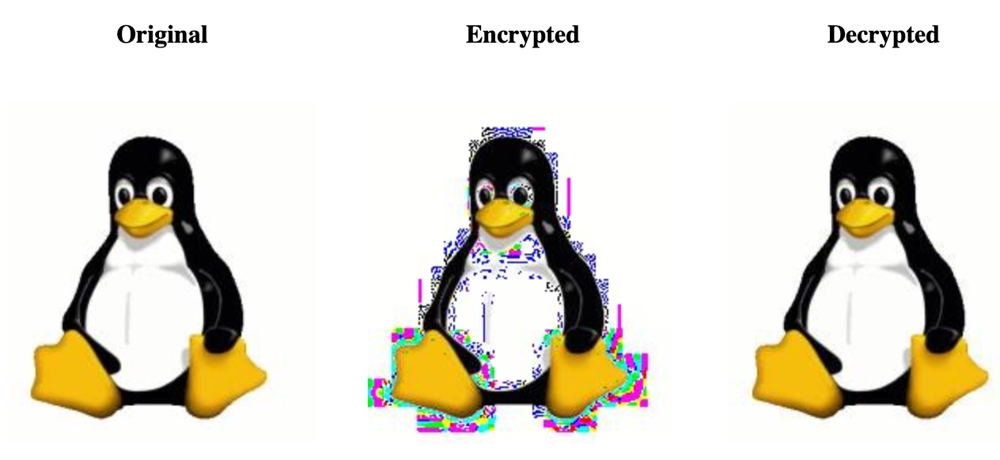
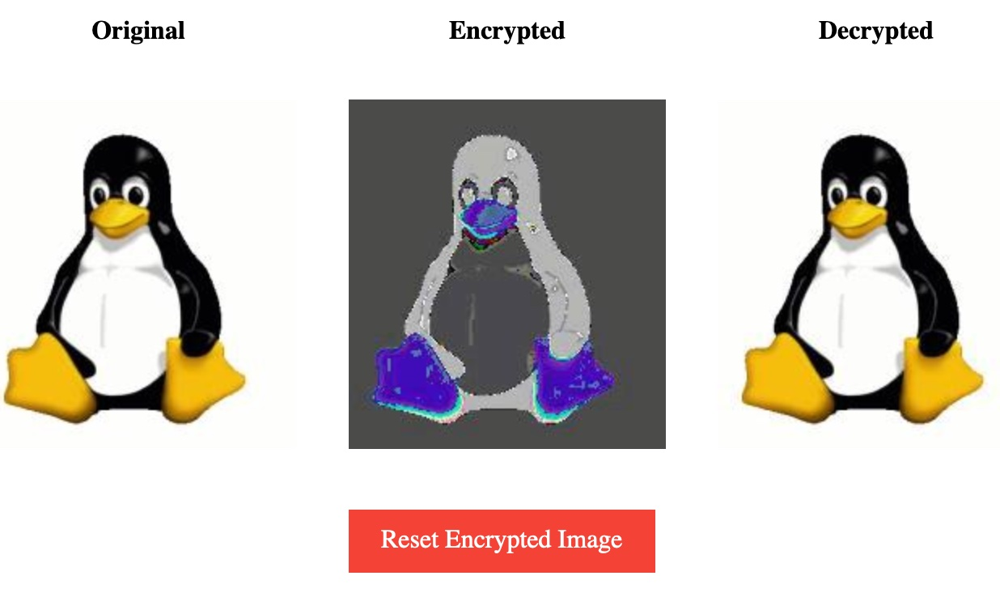
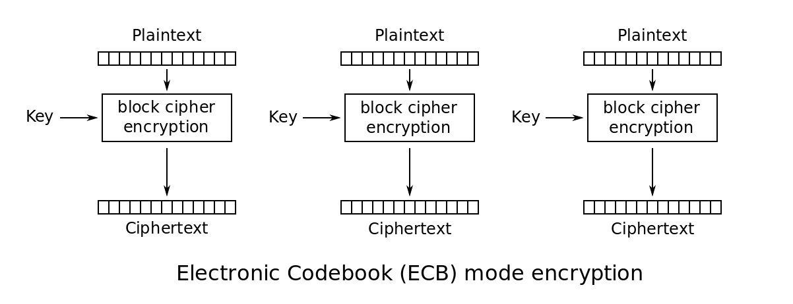
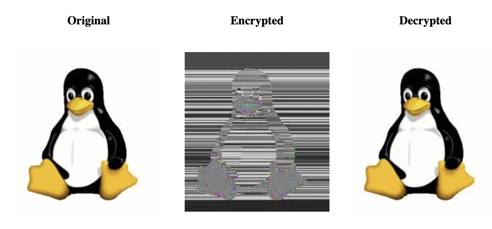
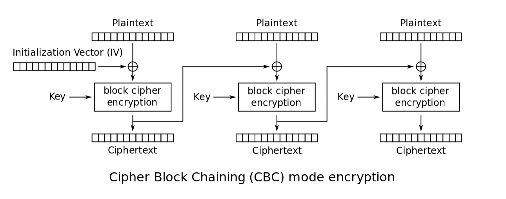

hashing-encryption.jar under Topic 2 - Applied Cryptography.java -jar hashing-encryption.jar
0 to 1. Click ‘compute' again. 
10111111000010001111111101110010, and click ‘compute' 1 to the end of the current key.10111111000010001111111101110010, use HiHi as the message. After clicking compute, do you notice any repetition or pattern in the Hex representation of the cipher text?10110101 (or any 8-bit key you want), reset the encrypted image, and click ‘compute'.
This block cipher works in a similar mode to Electronic CodeBook (ECB) mode encryption (which is flawed):

Note, this is similar to a Vigenère cipher.
Note, this is experimental.
10110101 (or any 8-bit key you want), reset the encrypted image, and click ‘compute'.
This block cipher works in a similar mode to the Cipher Block Chaining (CBC) mode of encryption:

Other than the trivial Caesar Cipher and the impractical One-Time Pad, all the XOR-based encryption (mode) functions used in these labs are not full encryption schemes. That is, amongst other things, XOR schemes on their own are linear and malleable. Malleability allows an attacker to manipulate intercepted cipher text — without decrypting it — and change part of it to something different but still meaningful — passing the modified cipher text onto the recipient. Linearity makes it easier to break the cipher (e.g. by solving linear equations) if you know the plaintext-cipher text pairs, known as a Chosen Plaintext Attack (CPA).
This is why real-world encryption ciphers like AES use additional techniques such as permutation, substitution, rounds, authentication tags, and key schedules. It is a huge topic!
The ciphers presented here are all symmetric key ciphers, we have not discussed asymmetric key encryption e.g. public key cryptography.
Also, all these run in JavaScript, I've no real idea what it is actually doing when XORing!